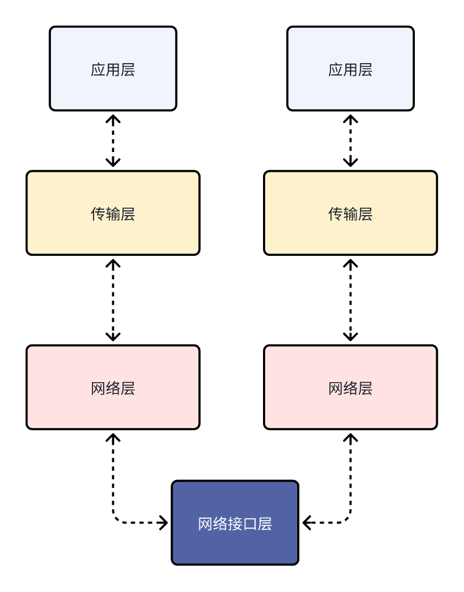
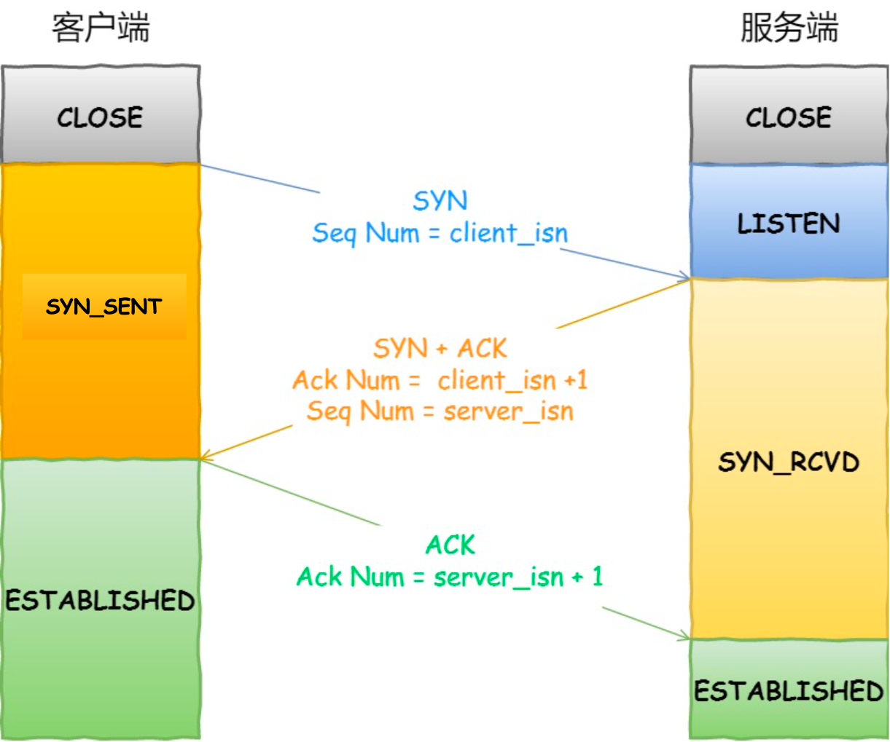
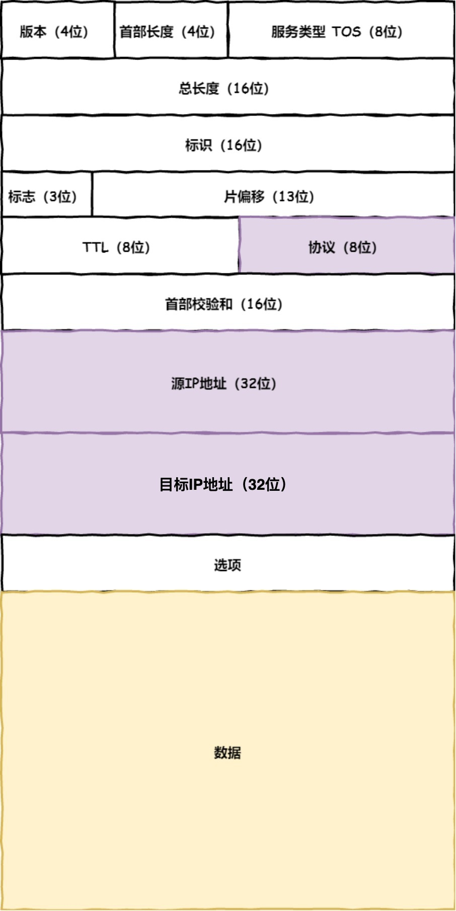
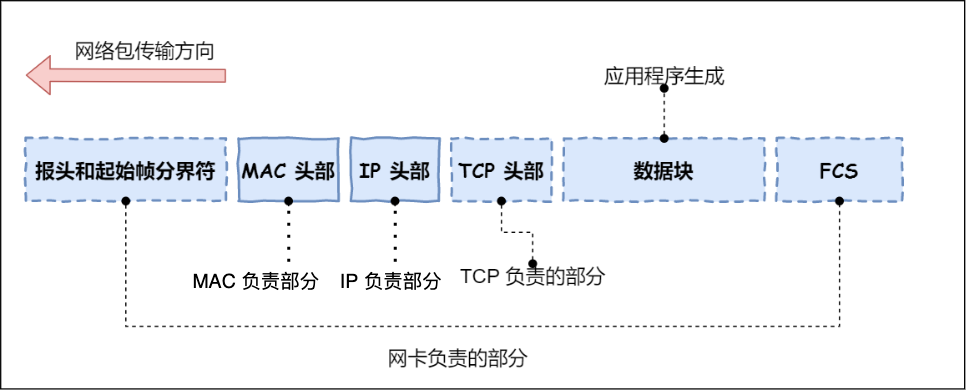

TCP/IP协议基础
一、网络层架构介绍
思考：为什么要有TCP/IP网络模型？
回答：对于同一个设备删的进程间通信，有很多种方式，比如有管道、消息队列、共享内存、信号等方式，而对于不同设备上的进程间通信，就需要网络通信，设备是有多样性的，所以需要兼容多种多样的设备，就协商出了一套通用的网络协议。
这个网络协议是分层的，每一层都有自己的作用和职责。
应用层
最上层的就是我们直接接触到的应用层（Application Layer），我们电脑或手机使用的应用软件都是在应用层实现的，当两个设备需要通信的时候，应用就把应用数据传输给下一层，也就是传输层。
所以应用层只需要专注一位用户提供应用功能，比如HTTP、FTP、Telnet、DNS、SMTP等。
应用层是不用关系数据是如何传输的，就类似于我们寄快递，只需要把包裹交给快递员，由他负责运输快递i，我们不需要关系快递是如何被运输的。
而且应用层是工作在操作系统中的用户态，传输层及以下则工作在内核状态。
传输层
应用层的数据报会传给传输层（Transport Layer）是为应用层提供网络支持的。
在传输层会有两个拆书协议，分别是TCP和UDP。
TCP全称是传输控制协议（Translation Control Protocol）大部分应用使用的正是TCP传输协议，比如HTTP应用层协议。TCP相对UDP来说多了很多特性，比如流量控制，超时重试，拥塞控制等，这些都是为了保证数据包的可靠性传输。
UDP比较简单，只需要负责发送数据包，不保证数据是否抵达对方，但实用性比较好，传输效率更高，当然UDP也可以实现可靠传输，把TCP的特性在应用层上实现，不过实现一个可靠的UDP协议不是简单的事儿。
应用需要传输的数据可能非常大，如果直接传输就不好孔子，因此当传输层的数据士大小超过MSS（TCP最长报文段长度），就要将数据包分块，这样及时中途有一个分块丢失或损坏了，只需要重新发送一个分块，不用重新发送整个数据包。在TCP协议中，我们把每个分块称为一个TCP段（TCP Segment）。
当设备作为接收方时，传输层则要负责把数据包传给应用，但是一台设备上可能会有很多应用在接收或者传输数据，因此需要一个编号将应用区分开，这个编号就是端口。
比如80端口通常是Web服务器用的，22端口通常是远程登录服务器用的。对于浏览器中的每个标签页都是一个独立的进程，操作系统会有这些进程分配临时的端口号。
由于传输层中会携带端口号，因此接收方可以识别出该报文是发送给哪个应用。
网络层
传输层在刚接触的时候会认为它负责将数据从一个设备传输到另外一个设备，事实上它并不负责。
实际场景中的网络缓解错综复杂，中间有各种各样的线路和分叉路口，如果一个设备的数据要传输给另一个设备，就需要在各种各样的路径和节点进行选择，而传输层的设计连很简单、高效、转租，如果传输层还负责这块儿功能就有点违背设计原则。
也就说说我们不希望传输层协议处理太多的事儿，只需要服务好应用层即可，让其作为应用减数据传输的媒介，帮助实现供应泳道应用的通信，而实际的传输功能就交给下一层，就是网络层（Internet Layer）。
网络层最常用的就是IP协议（Internet Protocol），IP协议会将传输层的报文作为数据部分，再加上IP报头组成IP报文，如果IP报文大小超过MTU（以太网中一般为1500字节）就会再次进行分片，得到一个即将发送网络的IP报文。
网络层负责将数据从一个设备传输到另一个设备，世界上那么多设备，又该如何找到对方，因此网络层需要区分设备的编号。
一般用IP地址给设备进行编号，对于IPV4协议，IP地址共32位，分为了四段（192.168.100.1），每段是8位，只有一个淡村的IP地址虽然做到了区分设备，但是寻址起来还是特别麻烦的，因为因特网中有很多很多设备一个一个匹配很显然不科学。
因此需要将IP地址分成两种意义：
1、网络号：负责表示该IP地址属于哪个子网的。
2、主机号：负责标识同一子网下的不同主机。
怎么分呢？需要配合子网掩码才能算出IP地址的网络号和主机号。
举例子：比如10.100.122.0/24，后面/24表示就是255.255.255.0子网延安，255.255.255.0二进制位11111111.11111111.11111111.00000000总共是24个1，为了简化子网掩码就用/24来表示子网掩码。
怎么计算出网络地址和主机地址呢？
比如：IP: 10.100.122.2 子网掩码:255.255.255.0
网络号计算方式：
与运算：
主机号计算方式：将255.255.255.0取反与IP地址进行按位与运算，就可以得到主机号：
转换：
将子网掩码取反相与：
可以搜索下子网掩码计算器，改变下掩码位的数值，就能体会到子网掩码的作用：
在寻址的过程中，先匹配到的相同的网络号（表示要找到同一个子网）才会找到对应的主机。
除了寻址能力，IP协议还有另一个重要的作用就是路由。实际场景中，两台设备并不是用一条网线连接起来的，而是通过很多网关、路由器、交换机等众多网络设备连接起来的，就会形成很多条网络的路径，因此当数据包到达一个网络节点，就需要路由算法决定下一步哪条路径。
路由器寻址工作中，就是找到目标地址的子网，找到后进而把数据报转发到对应的网络内。
所以，IP协议的寻址作用就是告诉我们去往下一个目的地朝哪个方向走，路由则是根据【下一个目的地】选择路径。寻址更像在导航，路由更像在操作方向盘。
网络接口
生成IP之后，接下来就要交给网络接口层（Link Layer）在IP头部的前面加上MAC头部，并封装成数据帧（Data Frame）发送到网络上。

IP头部中的接收方IP地址表示网络包的目的地，通过这个地址我们就可以判断要将包发到哪里，但在以太网的世界里，这个思路是行不通的。
什么是以太网呢？电脑上的以太网接口，Wi-Fi接口，以太网交换机、路由器上的千兆，万兆以太网口，还有网线，都是以太网的组成部分。以太网就是一种在【局域网】内，把附近的设备连接起来，使他们之间可以进行通讯的技术。
以太网在判断网络包目的地时和IP的方式不同，因此必须采用相匹配的方式才能在以太网中奖包发往目的地，而MAC头部就是干这个用的，所以在以太网进行通讯要用的MAC地址。
MAC头部是以太网使用的头部，它包含了接收方和发送方的MAC地址等信息，我们可以通过ARP协议获取对方的MAC地址。
所以说网络接口层主要为网络层提供【链路级别】传输的服务，负责在以太网，WiFi这样的底层网络上发送原始数据包，工作在网卡这个层次，使用MAC地址来表示网络上的设备。
总结
TCP/IP网络通常从上到下分为4层，分别是应用层、传输层、网络层和网络接口层。
每一层封装的格式：

网络接口层的传输单位是帧（frame），IP层的传输单位是包（packet），TCP层传输单位是段（segment），HTTP传输单位则是消息或报文（message）。统称为数据包。
二、网址解析到显示过程
当输入网址之后，到网页显示，期间都发生了什么？
HTTP解析
浏览器的第一步就是就是解析URL。从而生成发送给web服务器的请求信息。
一条URL都包含哪些元素？

上图中长长的URL实际上是请求服务器里面的文件资源。
当没有路径时，就代表访问根目录实现设置的默认文件，也就是/index.html或者/default.html文件，就不会发生混乱了。
生成HTTP请求信息：
对URL进行解析之后，浏览器确定了Web服务器和文件名，接下来就是根据这些信息生成HTTP请求信息。
DNS解析
通过浏览器解析URL并生成HTTP消息后，需要委托操作系统将消息发送给Web服务器。
在发送之前，还有一项工作要完成，就是查询服务域名对应的IP地址，因为委托操作系统发送消息时，必须提供通信对象的IP地址。
比如我们打电话的时候必须要知道对方的电话号码，。但是由于电话号码表难记，就通常将对方电话号码+姓名保存在通讯录中，那么拨打的时候直接使用姓名就可以拨打。
所以在服务器中也有专门保存了Web服务器域名与IP对应关系的，就是DNS服务器。
域名的层级关系
DNS中的域名都是用句点（英文状态下的点）来分割的，比如www.server.com，这里的句点代表了不同层次之间的界限。
在域名中，越靠右的位置表示其层级越高。比如www.server.com.，最后一个句点代表的是根域名，也就是 . 根据在最顶层，下一层就是 .com 顶级域，在下一层就是 server.com 所以域名的层级关系类似一个树状结构：
根DNS服务器（.）。
顶级域名DNS服务器（.com）。
权威DNS服务器（server.com）。
根域的DNS服务器信息保存在互联中搜友的DNS服务器中。这样一来，任何DNS服务器就可以找到并访问根域DNS服务器了。因此客户端只要能找到任意一台DNS服务器，就可以通过它找到根域DNS服务器，然后在一路顺腾蘑菇找到位于下层的某台目标DBS服务器。
域名解析的工作流程
客户端发出一个DNS请求，比如问www.server.com的IP是啥，并发给本地DNS服务器（就是客户端的TCP/IP设置中填写的DNS服务器地址）。
本地域名服务器收到客户端的请求后，如果缓存里的表格能找到www.server.com就直接返回IP地址，如果没有，本地DNS会去问它的根域名服务器：“请告诉我www.server.com对应的IP地址是啥？”，根域名服务器是最高层次的，不直接用于域名解析，但能指明一条道路。
根DNS收到来自本地DNS请求后，发现顶级域名是.com，就返回给本地“www.server.com是规.com管理的 我给你.com顶级域名服务器地址，你去找他”。
本地DNS收到根域名服务器地址后，就拿着IP地址去问顶级域名服务器的IP地址。
顶级域名服务器将www.server.com区域的权威DNS服务器地址返回给本地DNS。
本地DNS直接拿着IP地址去问区域的权威DNS服务器，www.server.com对应的域名是啥？权威直接将www.server.com解析的结果返回给本地DNS。
本地DNS再将IP地址返回给客户端，客户端和目标就会建立连接。
就完成了DNS解析过程。
DNS域名解析的过程就类似于平时找人纹路过程，只会指路不会带路。
注意的是本地DNS第一次拿到域名对应的IP之后就会将IP于域名的映射关系缓存到本地，下次直接从缓存中获取。
协议栈
通过DNS获取到IP之后，就可以把HTTP的传输工作交给操作系统中的协议栈。
协议栈内部分为几个部分，分别承担不同的工作，上下关系是有一定的规则的，上面的部分会向下面的部分委托工作，下面的部分收到委托工作就会执行。
应用程序（浏览器）通过调用Socket库，来委托协议栈工作。协议栈的上半部分有两块，分别是负责TCP和UDP协议，这两个传输协议会接受应用层的委托收到数据的操作。
协议栈的下面一半是用IP协议控制网络包收到操作，在互联网上传数据时，数据会被切分成一块块的网络包，而将网络包发送给对方的操作就是由IP负责的。
此外IP中还包括了ICMP和ARP协议。
ICMP：用于告知网络包传送过程中产生的错误以及各种控制信息。
ARP：用于根据IP地址查询相对应的以太网的MAC地址。
IP下面的网卡驱动程序负责网卡硬件，而最下面的网卡则负责完成实际收发操作，也就是对网线中的信号执行发送和接收操作。
TCP协议
HTTP是基于TCP协议传输的，先了解下TCP协议。
TCP包头格式

首先源端口号和目的端口号是不可少的，如果没有找到这两个端口号，数据就不知道应该发给哪个应用。
序号：为了解决包乱序的问题。
确认序列：目的是确认发出去对方是否收到。如果没有收到就需要重新发送 ，直到送达位置，这就解决丢包的问题。
状态位：TCP是面向连接的，双方要维护连接中的各种状态，这些状态位的发送，会引起双方状态的变更。
SYN：是否发起一个链接。
ACK：是否收到回复。
RST：是否重新连接。
FIN：是否结束连接。
窗口大小：TCP要走流量控制，通信双方各声明一个窗口（缓存大小），表示自己当前能够的处理能力，不要发送太快也不要发送太慢。
窗口大小还可以做拥塞控制，对于真正的通路堵车不堵车，它无能为例，唯一能做的就是控制自己，也就是控制发送的速度。
建立连接-三次握手
在HTTP传输数据之前，首先需要TCP建立连接，TCP连接的建立，通常称为三次握手。
这个所谓的丽娜姐就是双发计算机里维护了一个状态机，在连接建立的过程中，双方的状态变化时序图如下图所示：

一开始，客户端和服务器处于CLOSE状态，先是服务端主动监听某个端口，处于LISTEN状态。
然后客户端主动发起连接SYN，之后处于SYN-SENT状态。
服务端收到发起的连接，返回SYN，并且ACK客户端的SYN，之后处于SYN-RCVD状态。
客户端收到服务端发送的SYN和ACK之后，发送对SYN确认的ACK，之后处于ESTABLISHED状态，因为一发一收成功了。
服务端收到ACK和ACK之后，处于ESTABLISHED状态，因为它也一发一收了。
所以三次握手的目的是保证双方都有发送和接收的能力。
查看TCP连接状态
TCP的连接状态查看，在Linux可以通过 netstat -napt命令查看。
TCP分割线
如果HTTP请求消息比较长，超过MSS长度，这时TCP就需要把HTTP的数据拆解成一块块的数据发送，而不是一次性发送所有数据。
MTU：一个网络包的最大长度，以太网中一般为1500字节。
MSS：除去IP和TCP头部之后，一个网络表锁能容纳的TCP数据的最大长度。
数据会被以MSS的长度为单位进行拆分，拆分出来的每一块数据都会被放进单独的网络包中。也就是么个拆分的数据加上TCP头信息，然后交给IP模块来发送数据。

TCP报文生成
TCP协议里面有两个端口，一个是浏览器监听的端口（通常是随机生成的）一个是Web服务器监听的端口（HTTP默认端口号是80，HTTPS默认端口是443）。
在双方建立了连接之后，TCP报文中的数据部分就是存放HTTP头部 + 数据，组装好TCP报文之后，就需要交给下面的网络层处理。
至此网络包的报文如下图所示：
远程定位-IP
TCP模块在执行连接、收发、断开等各阶段操作时，都需要委托IP模块将数据封装成网络包，发送给通信对象。
IP包头格式

在IP协议里面有源地址IP和目标地址IP：
源地址IP：即客户端输出的IP地址。
目标地址IP：通过DNS域名解析得到Web服务器IP。
因为HTTP是经过TCP传输的，所以IP包头的协议号，要填写成06 （十六进制）表示协议为TCP。
假设客户端有多个网卡，就会有多个IP地址，那IP头部的元地址应该选择哪个IP呢？
当存在多个网卡的时，在填写源地址IP时，就需要判断到底应该填写哪个地址。这个判断相当于在多个网卡中判断出应该使用哪个网卡来发送包。
这个时候需要根据路由表规则，来判断是哪个网卡作为源地址IP的。
Linux中使用 route -n查看当前系统的路由表。
假设Web服务器的目标地址是192.168.10.200：判断源地址IP是哪个？
首先先和第一条目的子网掩码（Genmask）进行 与运算， 得到结果为192.168.10.0，但是第一条目的Destination是192.168.3.0很显然不一致所以匹配失败。
在与第二条目的子网掩码进行 与运算，得到结果为192.168.10.0，与第二条目的Destination是192.168.10.9匹配成功，所以将使用eth1网卡的IP地址作为IP报头源地址。
假设Web服务器目标地址是10.100.20.100，那么依然按照上面的路由表规则来判断，判断后的结果是第三条匹配。
第三条比较特殊，目标地址和子网掩码都是0.0.0.0，这表示默认网关，如果其他所有条目都无法匹配，就会自动匹配这一行，并且后续就把包发给路由器，Gateway是路由器的IP地址。
IP报文生成
网络包的报文如下图所示：

两点传输-MAC
生成了IP头部之后，接下来网络包还需要再IP头部的前面加上MAC头部。
MAC头部格式
MAC头部是以太网使用的头部，它包含了接收方和发送方的MAC地址等信息。

在MAC包头部需要包含发送方MAC地址和接收方目标MAC地址，用于两点之间的传输。
一般在TCP/IP通信里，MAC包头的协议类型只使用：0800：IP协议、0806：ARP协议。
MAC发送方和接收方确认方式
发送方的MAC地址获取的比较简单，MAC地址是在网卡生产时就写入到ROM中的，只需读取这个信息写入到MAC头部即可。
接收方的MAC地址有点复杂，只要告诉以太网对方的MAC地址，以太网就会帮我们把包发送过去，那么很显然这里应该填写对方的MAC地址。
所以先搞清楚把包发送给谁，这个只需要查下路由表就可以知道，在路由表中找到相匹配的条目，然后把包发给Gateway列中的IP地址即可。
此时就需要ARP协议帮忙找到路由器中的MAC地址。
ARP协议会在以太网中以广播的形式，对以太网所有的设备喊出：”这个给IP地址是谁的？请告诉我MAC地址“。
然后会有人回答：”这个IP地址是我的，我的MAC地址是 xxxxx“。
如果对方和自己处于同一个子网中，那么通过上面的操作就可以那大对方的MAC地址，然后将MAC地址写入到MAC头部，MAC头部就完成了。（当然这里有ARP缓存，会将获取到MAC地址缓存几分钟）
在发送时：
1、先查询ARP缓存，如果缓存中存在对方的MAC地址，就不需要发送ARP查询，直接使用ARP缓存中的地址。
2、缓存中不存在时，需要进行ARP广播。
查看ARP缓存命令：arp -a
MAC报文生成

出口-网卡
网络包只是存放在内存中的一串二进制数字的信息，没有办法直接发送给对方。因此我们需要将数字信号转换为电信号，才能在网线上传说，也就是说，这才是真正的数据发送过程。
负责执行这一步骤的就是网卡，要控制网卡海选靠网卡驱动程序。
网卡驱动获取网络包之后，会将其复制到网卡内的缓存区中，接着会在其头加上报头和其实帧分解符，在末尾加上用于检测错误的帧校验序列。

起始帧分解符是一个用来表示包起始位置的标记。
末尾的FCS（帧校验序列）用来检查包传输过程中是否有损坏。
最后网卡将包转换为电信号通过网线发送出去。
送别者-交换机
来看下数据包是如何通过交换机的，交换机的设计是将网络包原样转发到目的地。交换机工作在MAC层，也称为二层网络设备。
交换机的包接收操作
首先，点信号到达网络接口，交换机里的模拟进行接收，接下来交换机里的模块将点信号转换为数字信号。
然后通过末尾的FCS校验错误，如果没有问题就放到缓冲区里面，这部分操作基本和计算机网卡相同，但交换的工作方式和网卡不同。
计算机的网卡本身具有MAC地址，并通过核对收到的包到接收方MAC地址判断是不是发给自己的额，如果不是发给自己就丢弃，相对，交换机的端口不核对接收方的MAC地址，而是直接接收所有的包放到缓冲区中，因此和网卡不同的是，交换机的端口不具有MAC地址。
将包存入缓存区之后，接下来需要查询这个包的接收方MAC地址是否已经在MAC地址表中。
交换机的MAC地址表中主要包含两个信息：
1、设备的MAC地址。
2、该设备连接的交换的哪个端口。

举个例子，如果收到的包的接收方的MAC地址为00-02-B3-1c-9C-F9则与上图中的第3行匹配，根据端口列的信息，可知这个地址位于3号端口上，然后可以通过交换电路将包发送到相应的端口了。
所以，交换机根据MAC地址表查找MAC地址，然后将信息发送到相对应的端口。
找不到MAC地址
无法再MAC地址表中找到MAC地址的话，可能舒i因为具有该地址的设备还没有向交换机发送过包，或者这个设备一段时间没有工作导致地址从地址表中删除了。
这种情况下，交换机无法判断英爱百包换到到哪个端口，只能将包转发到除了源端口之外的所有端口上，无论该设备连接在哪个端口上都能收到这个包。
这样子就不回产生什么问题，因为以太网的设计本来就是将包发送到整个网络的，然后只有相对应的接收者才能接收包，而其他设备则忽略这个包。
这样做会发送很多多余的包，会不会造成网络拥塞呢？
完全不用带安心，因为发送了包之后的目标设备会做出相应，只要返回了相应包，交换就可以将他的地址写入到MAC地址表，下次也就不需要把包发送到所有端口上。
局域网中每秒可以传输上千个包，多出一两个包问题不大。
此外，如果接收方MAC地址是一个广播地址，那么交换机会将包发送到除源端口之外的所有端口。
以下两个属于广播地址：
-> MAC地址中的FF:FF:FF:FF:FF:FF:FF。
-> IP地址中的：255.255.255.255。
出境大门-路由器
路由器与交换机的区别
网络包经过交换机之后，现在到达了路由器，并在此被转发到下一个路由器或目标设备。这一步转发的工作原理和交换机类似，也是通过查表判断包转发的目标。
不过在具体的操作过程上，路由器和交换机还是有区别的：
-> 因为路由器是具有IP设计的，俗称三层网络设备，路由器的各个端口都具有MAC地址和IP地址。
-> 而交换机是基于以太网设计的，俗称二层网络设备，交换机的端口不具有MAC地址。
路由器基本原理
路由器的端口具有MAC地址，因此它就能够称为以太网的发送方和接收方；同时还具有IP地址，从这个意义上来说，和计算机的网卡是一样的。
当转发包的时候，首先路由器端口会几首发给自己的以太网包，然后路由表查询转发目标，再由相应的端口作为发送方将以太网包发送出去。
路由器包的接收操作
首先，电信号到达网络接口部分，路由器中的模块会将电信号转换成数字信号，然后通过包末尾FCS进行错误校验。
如果没问题检查MAC头部中的接收方MAC地址，看看是不是发给自己的包，如果是就收到接收缓冲区中，否则就丢弃这个包。
总的来说，路由器的端口都具有MAC地址，只接收与自身地址匹配的包，遇到不匹配的包则直接丢弃。
查询路由表确定输出端口
完成包接收操作之后，路由器就会去掉包开头的MAC头部。
MAC头部的作用就是将包送到路由器，其中的接收方MAC地址就是路由器端口的MAC地址，因此当包到达路由器之后，MAC头部的任务就完成了，于是MAC头部就会被丢弃。
接下来路由器根据MAC头部后方的IP头部重点额内容进行包的转发操作。
转发操作分为几个阶段，首先是查询路由表判断转发目标。
假设地址为10.10.1.101的计算机要向地址为192.168.1.100的服务器发送一个包，这个包新到达上图中的路由器。
判断转发目标的第一步，根据包的接收方IP地址查询路由表中的目标地址栏，找到相匹配的记录。
路由匹配与每个条目的子网掩码和192.168.1.100IP做与运算后，得到结果与对应条目的目标地址进行匹配，如果匹配就会作为候选转发目标，如果不匹配就继续与下一个目标进行路由匹配。
如果第二条目的子网掩码255.255.255.0与192.168.1.100IP 与运算后得到的结果是192.168.1.0这与第二条目的目标地址192.168.1.0匹配，那么将第二条目记录就不作为转发目标。
实在找不到匹配路由时，就会选择默认路由，路由小中子网掩码位0.0.0.0的记录表示默认路由。
路由器的发送操作
接下来就会进入包的发送操作。
首先，我们需要根据路由表的网关列判断对方的地址。
-> 如果网关是一个IP地址，则这个IP地址就是我们要转发的目标地址，还未抵达终点，还需继续需要路由器转发。
-> 如果网关为空，则IP头部中的接收方IP地址就是要转发到目标地址，也就是终于找到IP包头里的目标地址了，说明已抵达终点。
知道对方的IP地址之后，接下来需要通过ARP协议根据IP地址查询MAC地址，并将查询的结果作为接收方MAC地址。
路由器也有ARP缓存，因此首先会在ARP缓存中查询，找不到在进行ARP查询请求。
接下来是发送方MAC地址字段，这里填写输出端口的MAC地址。还有一个以太类型字段，填写0800（十六进制）表示IP协议。
网络包完成后，接下来会将其转换为电信号并通过端口发送出去。这一步的工作过程和计算机也是相同的。
发送出去的网络包会通过交换机到达下一个路由器。由于接收方MAC地址就是下一个路由器的地址，所以交换机会根据这一地址将包传输到下一个路由器。
接下来，下一个路由器会将包转发给再下一个路由器，经过层层转发之后，网络包到达了最终的目的地。
注意：在网络包传输过程中，源IP和目标IP始终是不会变的，一直变化的是MAC地址，因为需要MAC地址在以太网内进行两个设备之间的包传输。
互相扒皮-服务器与客户端
数据报地道到服务器端，服务器于是开始扒皮数据包的皮，来获取到真正的数据。
数据包抵达服务器后，服务器会先扒开数据报的MAC头部，查看是否和服务器自己的额MAC地址符合，符合将包收起来。
接着继续扒开数据包的IP头，发现IP地址符合，根据IP头中协议项，直到自己上层是TCP协议。于是开始扒开TCP的头，里面有序列号，需要看一看这个序列号是不是我想要的，如果是的话就放入到缓存中返回一个ACK，如果不是就丢弃，TCP头部里面还有端口号，HTTP的服务器正在监听这个端口号。
于是，服务器自然知道是HTTP进程想要的这个包，于是将包发送给HTTP进程。
服务器HTTP进程看到，原来这个请求是访问一个页面，于是就把这个网页封装在HTTP响应报文中，HTTP响应报文也需要穿上TCP、IP、MAC头部，不过这次是源地址是服务器IP地址，目的地址是客户端IP地址。
串号头部衣服之后，从网卡出去，交由交换机已转发到出城的路由器，路由器就把响应包发到下一个路由器，就这样来回跳。
最后跳到路由器，路由器就扒开IP头部发现是要找数据，于是就把数据报发给了交换机，在由交换机转发到客户端。
客户端收到服务器的响应数据包之后，也会开始扒皮，把收到的数据报的皮扒开就剩下HTTP响应报文，交给浏览器渲染页面。
最后客户端就要离开，向服务器发起了TCP四次挥手，至此双方的连接就断开了。
三、Linux系统收发网络包
网络模型
为了是的多种设备能通过网络相互通信，和为了解决各种不同设备在网络互联中的兼容性问题，国际标准化组织制定了开放式系统互联通信模型（Open System Interconnection Reference Model），也就是OSI网络模型，分为7层：应用层、表示层、会话层、传输层、网络层、数据链路层和物理层。
每一层的智能都不同：
应用层：负责给应用程序提供统一的接口。
表示层：负责把数据转换成兼容另一个系统能识别的格式。
会话层：负责建立、管理和终止表示层实体之间的通信会话。
传输层：负责端到端的数据传输。
网络层：负责数据的路由、转发、分片。
物理层：腐恶在物理网络中传输数据帧。
由于OSI模型实在太复杂，剃齿的只有概念理论上的分层，并没有提供具体的实现方案。
事实上，我们比较常见的，就是使用的四层模型，即TCP/IP网络模型，Linux系统就是按照这套网络模型来实现网络协议栈的。
TCP/IP网络模型分为4层：应用层、传输层、网络层和网络接口层，每一层的职能如下：
应用层：负责向用户提供一组应用程序，比如HTTP、DNS、FTS。
传输层：负责端到端的通信，比图TCP、UDP。
网络层：负责网络包的封装、分片、路由、转发，比如IP、ICMP等。
网络接口层：负责网络包在物理网络中的传输，比如网络包的封帧、MAC寻址、差错检测，以及通过网卡传输网络帧等。
TCP/IP网络模型比OSI网络模型简化了不少，也容易记住，关系如下图：
不过，我们常说的七层和四层负载均衡，是用OSI网络模型来秒输的，七层对应的是应用层，四层对应的是传输层。
Linux网络协议栈
我们可以把自己的身体比作应用层中的数据，打底衣服比作传输层中的TCP头，外套比作网络层中的IP头，帽子和鞋子分别比作网络接口层的帧头和帧尾。
传输层：给应用数据前面增加了TCP头。
网络层：给TCP数据报增加了IP头。
网络接口层：给IP数据包前后分别增加了帧头和帧尾。
这些新增的头部和尾部，都有各自的作用，也都按照特定的协议格式填充的，每一层都增加了各自的协议头，那子安网络包的大小就增大了，但物理链路层饼不能传输任意大小的数据包，所以在以太网中，规定了最大传输单元MTU是1500字节，也就是规定了单词传输的最大IP包大小。
当网络包超过MTU的大小，就会在网络层分片，以确保门片后的IP包不会超过MTU的大小，如果MTU越小，需要分包就越多，那么网络吞吐量能力就越差，如果MTU越大，需要的分包就越少，那么网络吞吐能力就越好。
知道了TCP/IP网络模型，以及网络包的封装原理后，那么Linux网络协议栈的样子，其实就类似于TCP/IP的四层结构：
从上网的网络协议栈，可以看到：
应用程序需要通过系统调用，来根Socket层进行数据交互。
Socket层的下面就是传输层、网络层和网络接口层。
最下面的一层，则是网卡驱动程序和硬件网卡设备。
Linux接收网络包的流程
网卡是计算机里的一个硬件，专门负责接收和发送网络包，当网卡接收到一个网络包后，会通过DMA技术，将网络包写入到指定的内存地址，也就是写入到RingBuffer，这个是一个环型缓冲区，接着就会告诉操作系统这个网络包已经到达。
那么应该如何告诉操作系统这个网络包已经到达了呢 ？
最简单的一种方式就是触发中断，也就是每当网卡收到一个网络包，就触发一个中断告诉操作系统。
但是，这会存在一个问题，在高性能网络场景下，网络包的数量会非常多，那么就会触发非常多的中断，要知道当CPU收到了终端，就会停下手中的事情，而去处理这些网络包，处理完毕后，才会回去继续其他事情，那么频繁的触发中断，则会导致CPU一直没完没了的处理中断，而导致其他任务无法继续前进，从而影响系统化的整体效率。
所以为了解决频繁的中断带来的性能开销，Linux内核在2.6版本中引入了NAPI机制，它是混合中断和轮询的方式接收网络包，它的核心概念就是首先采用终端环型数据接收到服务程序，然后poll的方式来轮询数据。
因此，当有网络包到达时，会通过DMA技术，将网络包写入到指定的内存地址，接着网卡向CPU发起硬件中断，当CPU收到硬件中断请求号，根据中断表，调用已经注册的中断处理函数。
硬件中断处理函数会做如下的事情：
需要先【暂时屏蔽中断】，表示已经知道内存中有数据了，告诉网卡下次再收到数据包直接写内存就可以了，不要再通知CPU了，这样可以提高速率，避免CPU不停地被中断。
接着，发起【软中断】，然后恢复刚才屏蔽的中断。
至此，硬件中断处理函数的工作就已经完成。
硬件中断处理函数做的事情很少，主要耗时的工作都交给软中断处理函数了。
软中断处理
内核中的ksoftirq线程专门负责软中断的处理，当ksoftirq内核线程收到软中断后，就会来轮询处理数据。
ksoftirqd洗车纳恒会从Ring Buffer中国区一个数据帧，用sk_buff表示，从而可以作为一个网络包交给网络协议栈进行逐层处理。
网络协议栈
首先，会进入到网络接口层，在这一层会检查报文大的合法性，如果不合法则丢弃，合法的话找出该网络包的上层协议的类型，是IPv4还是IPv6，接着再去掉帧头和帧尾，然后交给网络层。
到了网络层，则取出IP包，判断网络包下一步的走向，比如是交给上层处理还是转发出去。确认好这个网络包要发送给本机后，就会从IP头里看看上一层协议的是TCP还是UDP，接着去掉IP头，然后交给传输层。
传输层取出TCP头或UTP头，根据四元组【源IP、源端口、目的IP、目的端口】作为表示，找出对应的socket并把数据放到socket的几首缓冲区。
最后，应用层程序调用socket接口，将内核的socket接收缓冲区的数据【拷贝】到应用层缓冲区，然后唤醒用户进程。
至此，一个网络包的接收过程就已经结束了，也可以从下图左边部分看到网络包接收流程，右边部分刚好反过来，它是网络包发送的流程。
Linux发送网络流程
如上图右边就是发送网络包的流程，正好和接收流程是相反的。
首先，应用程序会调用Socket发送数据报的接口，由于这个是系统调用，所以会从用户态陷入到内核态中的Socket层，内核会申请一个内核态的sk_buff内存，将用户发送的数据拷贝到sk_buff内存，并将其加入到发送缓冲区。
接下来，网络协议栈从Socket发送缓冲区中取出sk_buff，并按照TCP/IP协议从上到下逐层处理。
如果使用的是TCP传输协议发送数据，那么先拷贝一个新的sk_buff副本，这是因为sk_buff后续在调用网络层，最后到达网卡发送完成的时候，这个sk_buff会被释放掉。而TCP协议是支持丢失重传的，在收到对方的ACK之前，这个sk_buff不能被删除。所以内核的做法就是每次调用网卡发送的时候，实际上传输出去的是sk_buff的一个拷贝，等到ACK真正删除。
接着，对sk_buff填充TCP头，这里提一下，sk_buff可以表示各个层的网络包，在应用数据报交data，在TCP层称为segment，在IP层我们交packet在数据链路层称为frame。
可能会好奇，为什么全部是、数据包只用一个结构体来描述呢？协议栈采用的是分层结构，上层向下层传递数据时需要增加包头，下层向上层数据需要去掉包头，如果每一层都用一个结构体，那么层之间传递数据的时候，就要发生多次拷贝，将大大降低CPU效率。
于是，为了层与层之间传递数据时，不发生拷贝，只用sk_buff一个结构体来描述所有的网络包，那么他是如何做到的呢？ 是通过sk_buff中大data指针，比如：
当接收数据报的时候，从网卡驱动开始，通过协议栈层层往上传送数据报，通过增加skb->data值，来逐步剥离协议首部。
当要发送报文时，创建sk_buff结构体，数据缓存区的头部预留足够的空间，用来填充各层首部，在经过各下层协议时，通过减少 skb->daya 的值来增加协议首部。
当发送数据报时，data指针的移动过程：

至此，传输层的工作也就能完成了。
然后交给网络层，在网络层里面会做这些工作：选取路由（确认下一跳的IP）、填充IP头、netfilter过滤、对超过MTU大小的数据报进行分片。处理完成工作后交给网络接口层处理。
网络接口层会通过ARP协议获得下一跳的MAC地址。然后对sk_buff填充帧头和帧尾，接着将sk_buff放到网卡的发送队列中。
这一些工作准备好后，会触发【软中断】告诉网卡驱动程序，这里有新的网络包需要发送，驱动程序会从发送队列中读取sk_buff，将合格sk_buff挂到RingBuffer中，接着将sk_buff数据映射到网卡可访问的内存DMA区域，最后触发真实的发送。
当数据发送完以后，起始工作并没有结束，因为内存还没有清理，当发送完之后，网卡设备触发一个硬中断来释放内存，主要释放sk_buff内存和清理RingBuffer内存。
最后，当收到这个TCP报文的ACK应答时，传输层就会释放原始的sk_buff。
发送网络数据的时候，设计几次内存拷贝操作？
第一次，调用发送数据的系统调用的时候，内核会申请一个内核态的sk_buff内存，将用户待发送的数据拷贝到sk_buff内存，并将其加入到发送缓冲区。
第二次，在使用TCP传输协议的情况下，从传输层进入网络层的时候，每一个sk_buff都会克隆一个新的副本出来。副本sk_buff会被送往网络层，等它发送完的时候会释放掉，然后原始的sk_buff还保留在传输层，目的是为了实现TCP的可靠传输，等收到这个数据报的ACK时，才会释放原始的sk_buff。
第三次，当IP层发现sk_buff大于MTU时才需要进行。会再申请额外的sk_buff，并将原来的sk_buff拷贝为多个小的sk_buff。
总结
电脑与电脑之间通常都是通过网卡、交换机、路由器等网络设备连接到一起，那由于网络设备异构性，国际标准化组织定义了一个七层OSI网络模型，但是这个模型由于比较复杂，实际应用中并没有采用，而是采用了更为简化的TCP/IP模型，Linux网络协议栈就是按照了该模型来实现的。
TCP/IP模型主要分为应用层、传输层、网络层、网络接口层四层，每一层负责的职责都不同，这是Linux网络协议主要构成部分。
当应用程序通过Socket接口发送数据包，数据包会被网络协议从上到下进行逐层处理后，才会被送到网卡队列中，随后由网卡将网络包发送出去。
而在接收网络包的时候，同样也要经过网络协议栈从下到上的逐层过处理，最后才会被送到应用程序。